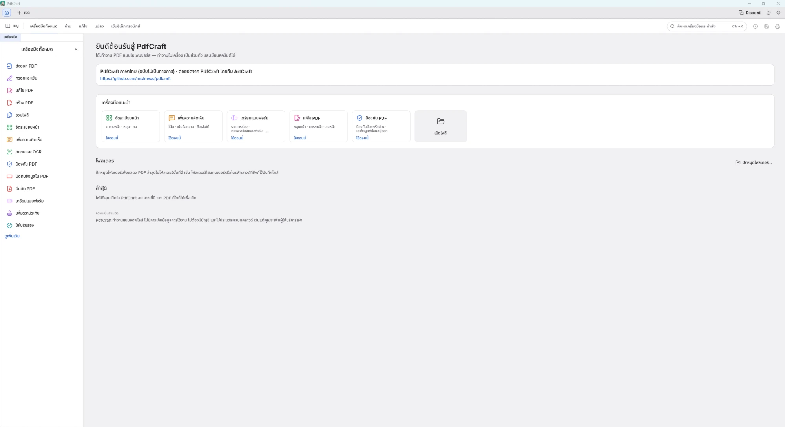

PdfCraft ภาษาไทย
โปรแกรมแก้ไข PDF ฟรี เมนูภาษาไทยทั้งหมด พิมพ์และแก้ข้อความไทยใน PDF ได้ สระและวรรณยุกต์ไม่เพี้ยน มีฟอนต์ TH Sarabun PSK ในตัว
รุ่นล่าสุด 0.14.0-th.1 · Windows 10/11 แบบ 64 บิต · มีทั้งตัวติดตั้ง (.msi) และแบบไม่ต้องติดตั้ง (portable)
ทำอะไรได้บ้าง
พิมพ์ภาษาไทยลงใน PDF
เพิ่มข้อความใหม่หรือแก้ข้อความเดิมเป็นภาษาไทย สระและวรรณยุกต์วางตำแหน่งถูกต้อง ค้นหาและคัดลอกข้อความได้
เมนูภาษาไทยทั้งหมด
หน้าจอและเมนูเป็นภาษาไทยทั้งโปรแกรม เลือกหรือเปลี่ยนภาษาได้ที่ การตั้งค่า › ภาษา
ฟอนต์ TH Sarabun PSK ในตัว
มีครบทั้งตัวปกติ ตัวหนา ตัวเอียง และตัวหนาเอียง และใช้ฟอนต์ที่ติดตั้งในเครื่องได้เหมือน Word
กรอกและเซ็นเอกสาร
กรอกแบบฟอร์ม ใส่วันที่แบบไทย ลายเซ็นแบบพิมพ์ และชื่อภาษาไทยในลายเซ็นดิจิทัล
ความคิดเห็นและตราประทับ
เขียนโน้ต คำบรรยาย ตราประทับ หัวกระดาษ ท้ายกระดาษ และลายน้ำเป็นภาษาไทยได้
จัดการหน้าและไฟล์
รวมไฟล์ จัดเรียง หมุน ลบหน้า บีบอัด PDF ใส่รหัสผ่าน และปิดทับข้อมูลที่ไม่ต้องการให้เห็น
ใช้งานง่ายเหมือน Word
คัดลอกกล่องข้อความด้วย Ctrl+C / Ctrl+V จัดลำดับชั้น มีเส้นช่วยจัดกึ่งกลางหน้า และลากของข้ามหน้าได้
ฟรี ออฟไลน์ เป็นส่วนตัว
ไม่ต้องสมัครบัญชี ไม่ต้องต่ออินเทอร์เน็ต ไฟล์ไม่ถูกส่งออกไปที่ไหน เป็นโปรแกรมโอเพนซอร์ส
ต่างจาก PdfCraft ตัวทางการอย่างไร
ฉบับภาษาไทยมีทุกอย่างของ PdfCraft ทางการรุ่น v0.14.0 และเพิ่มสิ่งเหล่านี้
| เรื่อง | PdfCraft ทางการ | PdfCraft ภาษาไทย |
|---|---|---|
| หน้าจอและเมนู | มีภาษาไทยแล้ว (ใช้คำแปลที่ฉบับนี้ส่งให้) แต่ข้อความใหม่ราว 70 ข้อยังเป็นภาษาอังกฤษ | ภาษาไทยครบทุกข้อความ รวมเมนูที่มีเฉพาะฉบับนี้ |
| พิมพ์ภาษาไทยด้วยเมนู "เพิ่มข้อความ" | ได้ (ฟอนต์ Noto Sans Thai) | ได้ เลือกฟอนต์ไทยได้ ทั้ง TH Sarabun PSK และฟอนต์ในเครื่อง พร้อมตัวหนาและตัวเอียง |
| ภาษาไทยในเมนูอื่นที่เขียนข้อความลง PDF | ไม่ได้ หรือขึ้นเป็นเครื่องหมาย ? (ทดสอบกับรุ่น v0.13.0: หัวกระดาษ ลายน้ำ และชื่อในลายเซ็นไม่รับภาษาไทย กรอกและเซ็นกับความคิดเห็นขึ้นเป็น ?) | ได้ทุกเมนู: กรอกและเซ็น (วันที่แบบไทย) ความคิดเห็น คำบรรยาย ตราประทับ หัวกระดาษ/ท้ายกระดาษ ลายน้ำ แถบปิดทับ ช่องฟอร์ม สร้าง PDF จากข้อความ และชื่อในลายเซ็น |
| ฟอนต์ TH Sarabun PSK | ไม่มี | มีในตัว ครบ 4 แบบ |
| ใช้ฟอนต์ที่ติดตั้งในเครื่อง | ได้เฉพาะตอนแก้ข้อความเดิม และเฉพาะฟอนต์ที่มีสัญญาอนุญาตแบบเปิด ไม่มีช่องค้นหา (เพิ่มข้อความใช้ได้แค่ Helvetica, Times, Courier) | ได้ทุกฟอนต์ในเครื่อง ทั้งเพิ่มข้อความและแก้ข้อความเดิม เหมือน Word มีช่องค้นหาชื่อฟอนต์ และป้าย TH บอกฟอนต์ที่รองรับภาษาไทย |
| แบบอักษรของหัวกระดาษ/ท้ายกระดาษ และลายน้ำ | หัวกระดาษเลือกได้ 3 แบบ (Helvetica, Times, Courier) ลายน้ำ Helvetica อย่างเดียว ไม่มีตัวหนาหรือตัวเอียง | เลือกฟอนต์ไทยหรือฟอนต์ในเครื่องได้ พร้อมตัวหนาและตัวเอียง |
| ชี้เมาส์แล้วเห็นผลก่อนเลือก | ไม่มี | ในแผงจัดรูปแบบข้อความ ชี้ที่ฟอนต์ ขนาด สี ตัวหนา ตัวเอียง หรือขีดเส้นใต้ ข้อความจะเปลี่ยนให้ดูก่อน ถ้าไม่คลิกก็กลับเป็นแบบเดิม |
| ขนาดตัวอักษร | เลือกจากรายการเท่านั้น | พิมพ์ตัวเลขเองได้ตั้งแต่ 1–500 pt หรือเลือกจากรายการ |
| แก้ไขข้อความเดิมในไฟล์ | คลิกครั้งเดียวเปิดแก้ทันที | คลิกครั้งเดียวเลือก ลากหรือกดลูกศรเพื่อขยับ ดับเบิลคลิกเพื่อแก้ (คล้าย Word) และกด Ctrl+E เพื่อเข้าโหมดแก้ไขข้อความและรูปภาพ |
| จัดลำดับชั้น (หน้าสุด/หลังสุด) | ไม่มี | มี ใช้กับกล่องข้อความ รูปภาพ และความคิดเห็น (คลิกขวา › จัดลำดับ หรือ Ctrl+] / Ctrl+[) |
| เส้นช่วยจัดกึ่งกลางหน้า | ไม่มี | มี ดูดเข้ากึ่งกลางหน้าเหมือน Word (กด Alt ค้างเพื่อไม่ให้ดูด) |
| คัดลอกความคิดเห็นและลากข้ามหน้า | ไม่มี | คัดลอก/วางความคิดเห็นได้ทุกแบบ ลากกล่องข้อความ รูปภาพ และความคิดเห็นไปหน้าอื่นได้ (Ctrl ค้าง = คัดลอกข้ามหน้า) และวางรูปจากโปรแกรมอื่นด้วย Ctrl+V |
| สั่งพิมพ์บน Windows | ไฟล์ที่มีข้อความแบบ Type 3 ทำให้โปรแกรมปิดตัวตอนพิมพ์ และรูปที่พิมพ์เป็นภาพถูกย่อเหลือราว 96 dpi จนเบลอ | ไฟล์แบบนั้นพิมพ์เป็นภาพให้อัตโนมัติ ไม่ปิดตัว และส่งรูปความละเอียดเต็มไปที่เครื่องพิมพ์ |
| หน้าต่างพิมพ์ | ต้องคลิกปุ่มพิมพ์ | กด Enter เพื่อพิมพ์ได้เลย |
| ป้ายอธิบายเครื่องมือ | อาจถูกเคอร์เซอร์บังเมื่อตั้งเคอร์เซอร์ใหญ่ | ปรับตำแหน่งตามขนาดเคอร์เซอร์ที่ตั้งไว้ใน Windows |
| ตรวจหาการอัปเดต | แจ้งรุ่นของทางการ | แจ้งรุ่นใหม่ของฉบับภาษาไทย |
เปรียบเทียบกับ PdfCraft ทางการรุ่น v0.14.0 ตามโค้ดของทั้งสองฉบับและการทดลองใช้ตัวทางการ ถ้าทางการเพิ่มสิ่งเหล่านี้ในรุ่นถัดไป ตารางนี้อาจเปลี่ยน
ดาวน์โหลดและติดตั้ง
- เปิดหน้า ดาวน์โหลดรุ่นล่าสุด แล้วเลื่อนลงไปที่หัวข้อ Assets
- แบบติดตั้ง: กดไฟล์ที่ลงท้ายด้วย
-windows-x64.msiแล้วดับเบิลคลิกเพื่อติดตั้ง จะมีทางลัดใน Start menu และบนเดสก์ท็อป - แบบไม่ต้องติดตั้ง: กดไฟล์ที่ลงท้ายด้วย
-portable.zipแตกไฟล์ไว้ที่ใดก็ได้ (เช่น แฟลชไดรฟ์) แล้วเปิดpdfcraft.exe - เปิดโปรแกรม จะเป็นภาษาไทยทันที ลากไฟล์ PDF มาวางในโปรแกรมเพื่อเริ่มแก้ไขได้เลย
Windows อาจเตือนตอนเปิดครั้งแรก เพราะไฟล์โปรแกรมในฉบับนี้ยังไม่มีลายเซ็นดิจิทัล ถ้าขึ้นหน้าต่าง "Windows protected your PC" ให้กด More info แล้วกด Run anyway ตรวจสอบได้ว่าไฟล์ไม่ถูกแก้ไขระหว่างทางโดยเทียบค่า SHA-256 ที่ระบุในหน้าดาวน์โหลด
คำถามที่พบบ่อย
ใช้ฟรีจริงไหม มีโฆษณาหรือไม่
ฟรีทั้งหมด ไม่มีโฆษณา ไม่มีรุ่นเสียเงิน ตัวโปรแกรมเป็นโอเพนซอร์ส (สัญญาอนุญาต MIT หรือ Apache-2.0) ดูซอร์สโค้ดได้ที่ GitHub
แก้ข้อความเดิมแล้วตัวอักษรเพี้ยน หรือฟอนต์ไม่เหมือนเดิม
PDF ส่วนใหญ่ (เช่น ที่บันทึกจาก Word) ฝังฟอนต์มาไม่ครบชุด โปรแกรมจึงต้องหาฟอนต์ตัวเต็มจากในเครื่อง ถ้าไม่มีจะใช้ TH Sarabun PSK แทน วิธีแก้คือติดตั้งฟอนต์ที่เอกสารใช้ลงในเครื่อง แล้วเปิดโปรแกรมใหม่
- ดูชื่อฟอนต์ได้ที่ คุณสมบัติเอกสาร (Ctrl+D) › แท็บ "แบบอักษร"
- ฟอนต์ Angsana New, Cordia New, Browallia New เพิ่มได้ที่ การตั้งค่า Windows › แอป › ฟีเจอร์เพิ่มเติม › "Thai Supplemental Fonts"
ต่างจาก PdfCraft ตัวทางการอย่างไร
ฉบับนี้ต่อยอดจาก PdfCraft รุ่น v0.14.0 แล้วเพิ่มการพิมพ์และแก้ข้อความภาษาไทยในทุกเมนู ฟอนต์ TH Sarabun PSK ในตัว เมนูฟอนต์ที่ค้นหาได้ และปรับการใช้งานให้คล้าย Word ถ้าติดตั้งทับตัวทางการ จะใช้แทนกันได้เลย ดูรายการทั้งหมดได้ที่ ตารางเปรียบเทียบ
อ่านข้อความไทยจากไฟล์สแกน (OCR) ได้ไหม
ยังไม่ได้ ตอนนี้ OCR อ่านได้เฉพาะภาษาอังกฤษ
เจอปัญหา แจ้งได้ที่ไหน
แจ้งได้ที่ หน้า Issues ของฉบับภาษาไทย โปรดอย่าแจ้งที่โปรเจกต์ต้นฉบับ เพราะผู้พัฒนาต้นฉบับไม่ได้ดูแลฉบับนี้